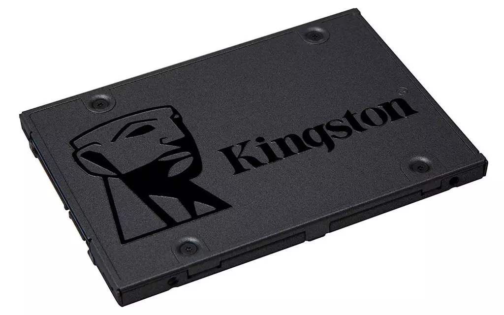

La mejor manera de dar un soplo de aire fresco a un viejo ordenador es sustituir su antiguo disco duro mecánico por una unidad SSD. Gracias a sus velocidades de transferencia netamente superiores y sus minúsculos tiempos de búsqueda y acceso a los datos, lograremos un boost de velocidad más que apreciable. Veamos cómo lo debemos de hacer.
La bajada de precio que estamos viendo en las unidades de almacenamiento sólido está propiciando que muchos usuarios se decidan, finalmente, a desterrar su antiguo disco duro mecánico, para sustituirlo por uno de los nuevos SSD. Generalmente, esta sustitución suele hacer referencia al disco mecánico donde se almacena el sistema operativo, que es donde más se va a notar el cambio. Al menos, de manera práctica, porque si empleáis el nuevo SSD para juegos, lo único en que mejorará el equipo es que los juegos cargarán más rápidos. Sin embargo, si lo instalamos para sustituir a nuestra unidad de sistema, las ventajas serán más que evidentes desde la primera vez que arranquéis el ordenador.
Lo primero que deberéis de decidir es el tipo de formato a emplear para vuestro nuevo SSD. Si tenéis una placa base moderna, es muy posible que incorpore una ranura M.2 para este tipo de unidades de almacenamiento sólido. En este caso, deberíais de averiguar si la ranura soporta la conexión al bus PCIe o solo al bus SATA de la placa base. Esta decisión es importante hacerla, dado que de nada servirá comprar un SSD NVMe, si luego no va a poder funcionar a toda la velocidad que soporta este tipo de conexionado.
Si, por contra, vuestro equipo no tiene este tipo de conexión, solo podréis comprar una unidad en formato de 2,5″.
Otro aspecto a decidir es el tamaño de la unidad por la que queréis sustituir al disco mecánico. Gracias a las bajadas de precio, podéis encontrar SSD muy baratos de todas las capacidades. Por ejemplo, el Kingston SSD A400 de 120 GB es un modelo de lo más capaz, y por los 31,99 euros que cuesta, es una opción perfecta si no se tiene mucho dinero.
